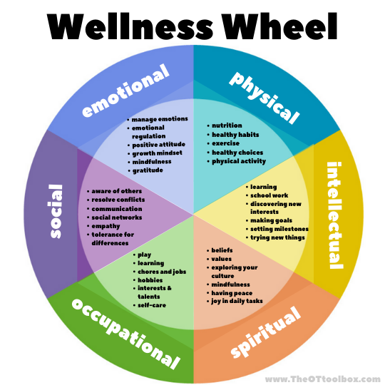

We're here to help you take control of your health
We, GreenPulse, believe that health is wealth. Our mission is to empower you to live a healthier, happier life by providing you with valuable information, resources, and inspiration. We're committed to spreading awareness about health and well-being
Why Your Health Matters
Health is our foundation for a fulfilling life - it affects everything we do. Good health allows us to live a fulfilling life, work effectively, and enjoy our relationships.

Key Components of Health:
- Physical Health: Having a strong body, sufficient energy, and the ability to perform daily activities without pain or fatigue.
- Mental Health: Able to cope with life's challenges, maintain positive relationships, and feel satisfied with oneself.
- Social Health: Ability to interact with others, build strong relationships, and contribute to our communities.
- Occupational Health: Maintaining physical and mental well-being in the workplace.
- Spiritual Health: Having a set of beliefs and values that guide actions and decisions helps provide a sense of direction and purpose.
- Intellectual Health: Involves engaging in activities that stimulate the mind, promoting cognitive functions and lifelong learning.